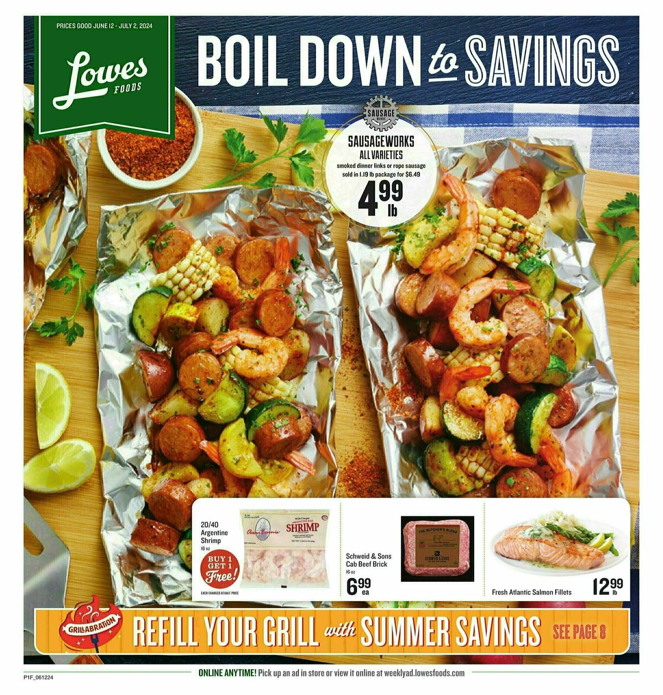

PureRED is a high-volume production studio specializing in retail marketing materials. As a Production Artist, I was responsible for producing weekly grocery circulars and promotional flyers for major North American grocery chains — on deadline, every week, without exception.
Working remotely from Colombia, I produced print-ready files for Lowes Foods and UNFI — including Sentry/Daniels Foods, which operates within the UNFI family. PureRED served additional retail clients as well. The pace was fast: assignments arrived daily through a shared task board and turnaround was tight. Accuracy was everything — a misplaced price or wrong item description meant a reprint.
Dozens of print-ready circulars delivered weekly — zero room for error.


Weekly grocery circulars produced for Lowes Foods — full-page print layouts built in InDesign.
Assignments arrived daily on a shared task board. Each item had a deadline, a template reference, and product specs — I picked them up and moved through the queue.
Work lived inside pre-built InDesign templates. Each week I updated pricing, swapped product images, adjusted copy, and applied seasonal promotions — keeping everything on-brand and print-ready.
Some pieces used automated PDF generation, where the template populated itself from data and I refined the output. Others required hands-on production from the template up. Either way, speed and accuracy were non-negotiable.
Files were preflighted and packaged as press-ready PDFs with correct bleed, color profiles, and resolution — ready to go straight to print.
The role sharpened my ability to work at production speed without sacrificing quality. Managing multiple clients with overlapping deadlines — each with their own templates, brand standards, and promotional calendars — required discipline, attention to detail, and a system that never slipped.